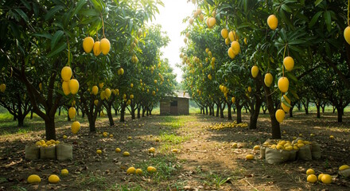
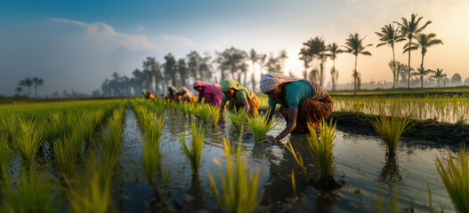
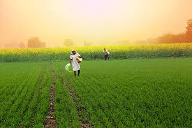
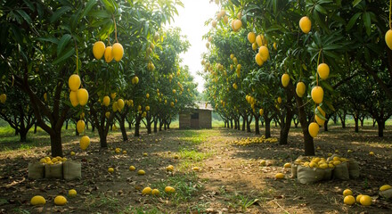
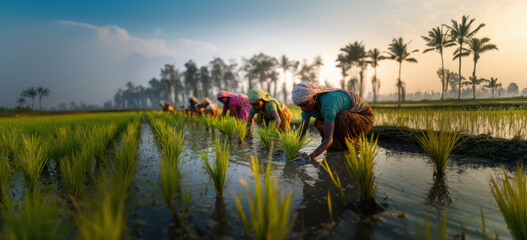
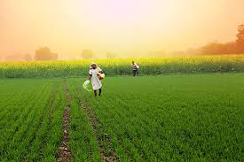

Precision Farming:
AI enables targeted application of water, fertilizers, and pesticides, reducing waste and environmental impact.
Increased Yields & Productivity:
Optimized planting and harvesting improve crop quality and output.
Enhanced Decision-Making:
AI analyzes weather, soil, and market data for better planning.
Cost Reduction:
Automation reduces labor costs and resource waste.
Sustainability & Environment:
Conserves water, improves soil health, and reduces emissions.
Crop & Livestock Monitoring:
Drones and sensors detect diseases and health issues early.
Predictive Analytics:
Forecasts risks, weather, and demand accurately.
Automation & Robotics:
Automates irrigation, harvesting, and weeding.